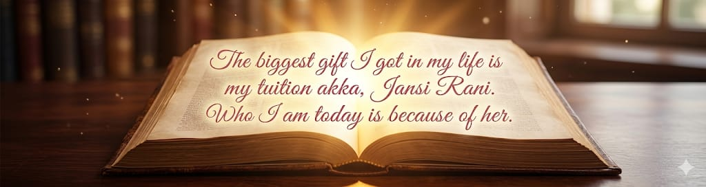
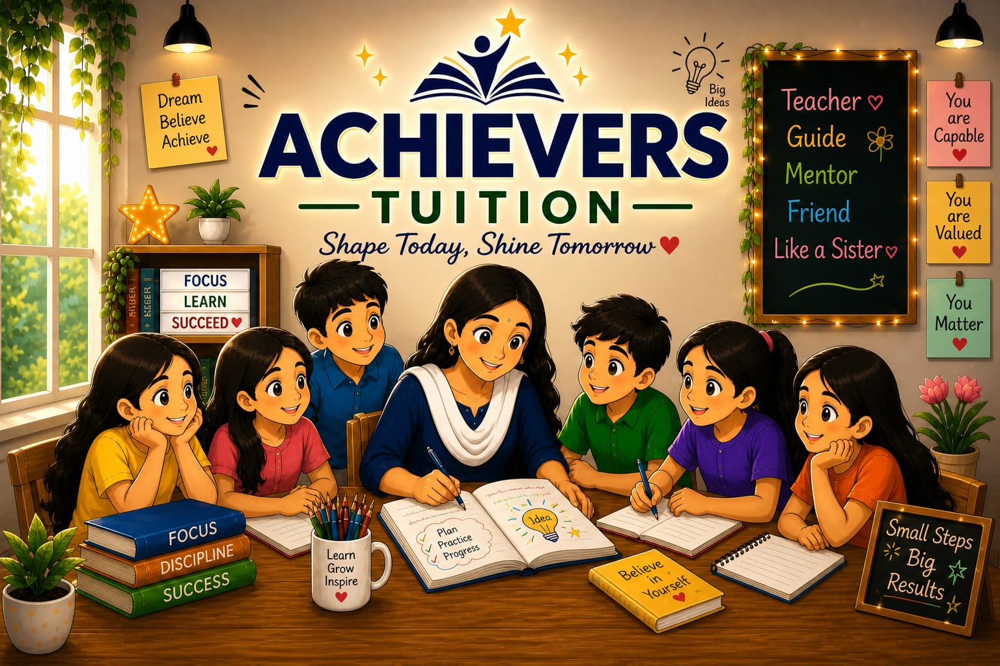
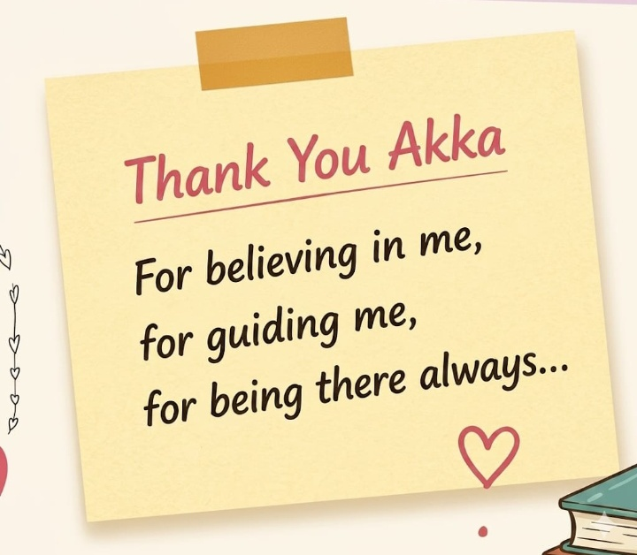

"Who I am today… is because of my tuition akka, Jansi Rani.” ❤️✨
Tuition Akka


“Every journey has a turning point… and mine began in my 10th standard.” ✨🌟💫 At that time, I had no interest in studies 😐📚❌. I didn’t understand the value of education 🤷♀️🎓, and my future felt unclear 🌫️😔. But everything changed because of one person — my tuition akka, Jansi Rani 💫👩🏫❤️. She didn’t just teach lessons… she changed my mindset 🧠✨💖. She told me, “Education is very important in life. You have to change your future.” 📚🎯🚀 Those simple words slowly stayed in my heart 💓💭 and began creating a change within me 🌱✨. I joined tuition along with my friends 👭👬🎒. In the beginning, akka used to scold us a lot 😅⚠️, and we didn’t like it 🙄😒. But later, I realized — it was all for our good 🙌💯❤️. Her way of teaching was unique 🎨✨, interesting 🤩📖, and full of care 💖🤗. Slowly, I started enjoying studies 📚😊 — something I never thought I would 😮💡. For me, she is not just a teacher — she is my well-wisher 💕, my guide 🧭✨, and like a sister 👩🏫❤️👭. She is the biggest reason behind my transformation 🔥🌟💫. After completing 12th standard 🎓📘, seeing the pride in her eyes 👀🥹✨ was one of the most meaningful moments in my life 💖🌈. She didn’t just teach subjects 📚 — she taught me how to face life 💪🌍, stay strong 🛡️✨, and move forward with confidence 🚶♀️🌟🔥. Because of her, I chose the path of education 🎓🛤️✨. Today, I am a college student 👩💻🎓 who truly understands the value of learning 📚💡✨. Even during my struggles after 12th 😔💭, she stood beside me 🤝❤️ and supported me like family 👨👩👧👦🤍. Tuition life was not just about studying 📚❌ — it was filled with happiness 😊🎉💃. With my friends 👭👬, akka 👩🏫❤️, and her son 👦✨, we shared laughter 😂🤣, food 🍱🍔, games 🎮🏸, and unforgettable memories 🎉📸💖. Now, I miss those days deeply… 🥺💭💔 Especially my tuition life 🏫✨ and the little kids there 👶👧🧒❤️. The greatest gift in my life is my tuition akka, Jansi Rani 🎁❤️🌟. Who I am today… is because of her 🙏✨💖.
|
 |
"Who I am today… is because of my tuition akka, Jansi Rani.” ❤️✨ |
Tuition Akka |
|
